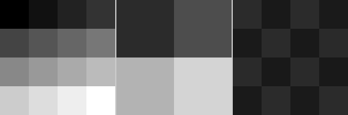
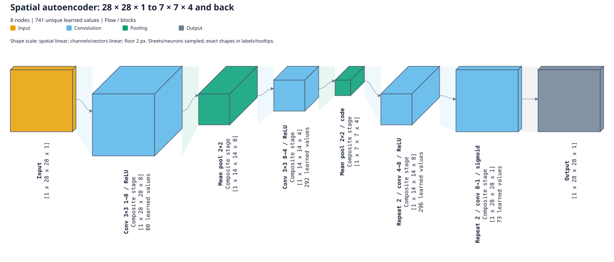
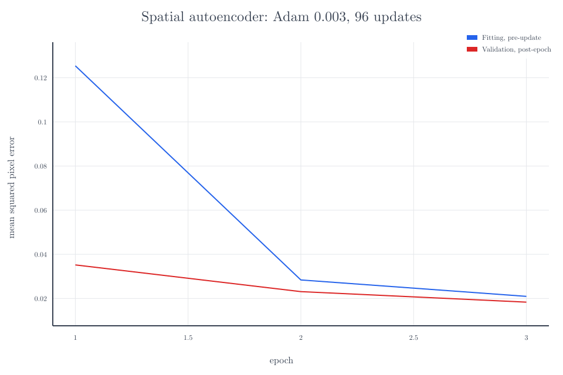
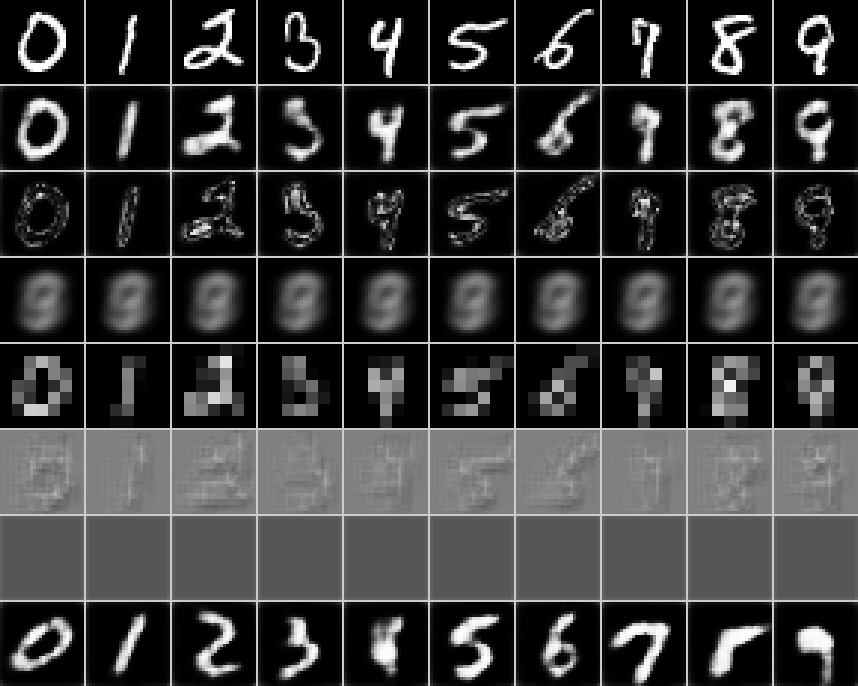

Convolutional Autoencoders: Reconstructing from Spatial Codes
Abstract
Reconstructing an image from a smaller representation requires retaining information about both appearance and location. A convolutional autoencoder learns local filters before reducing spatial resolution, then learns a decoder that expands the resulting feature maps. This report checks a four-by-four pooling example and its complete input gradient, derives the convolution and repetition adjoints, and trains the original 741-parameter model on genuine MNIST. Its spatial bottleneck is 7 by 7 by 4. Validation selects a checkpoint; separate held-out images compare the reconstruction with untrained, fitting-mean, pooling, zero-code and shuffled-code controls. The experiment concerns pixel reconstruction: held-out MSE is 0.01778 versus 0.06780 for a fitting-mean image. It makes no classification, denoising or compressed-file claim.
The method
A grayscale image \(X\in[0,1]^{H\times W\times1}\), with dimensions divisible by four, becomes an image-shaped code \(Z\in\mathbb R^{H/4\times W/4\times4}\). Four independent learned convolutions and fixed spatial operations define the complete reconstruction path. Let \(C_{K,b}\) mean a stride-one, same-padded 3 by 3 cross-correlation plus bias, \(A_2\) a nonoverlapping 2 by 2 average, \(U_2\) nearest repetition, \(\rho\) ReLU, and \(\sigma\) the sigmoid. Then
There is no skip or dense bypass. The code has one quarter as many real coordinates as the input: \((H/4)(W/4)4=HW/4\). Four channels preserve more information than a single pooled intensity map, but they are not a guaranteed lossless representation. Quantization, entropy coding, model storage and a shared decoder would be needed to specify a compression bit rate.
#include <dm/dm.hpp>
int main() {
std::filesystem::create_directories("build");
dm::graphics::Diagram d(58, 1100);
d.node("x", {0, 0}, "Image\n28 × 28 × 1")
.node("e", {5, 0}, "Learn local filters\nReLU + mean pool, twice")
.node("z", {10, 0}, "Spatial code\n7 × 7 × 4")
.node("d", {10, -3}, "Repeat + convolution\nTwice, sigmoid output")
.node("r", {5, -3}, "Reconstruction\n28 × 28 × 1")
.node("l", {0, -3}, "Pixel MSE\nAdam updates all four filters")
.edge("x", "e")
.edge("e", "z")
.edge("z", "d")
.edge("d", "r")
.edge("r", "l")
.edge("x", "l", "Target")
.save_svg("build/convolutional_method.svg");
}
For a batch of \(N\) images, mean squared error averages every pixel, \(L=\sum(\hat X-X)^2/(NHW)\). Its output-logit derivative is \(\Delta=2(\hat X-X)\hat X(1-\hat X)/(NHW)\). A convolution's shared kernel receives contributions from every image and location. For input \(V\), offset \((a,b)\), input channel \(c\), output channel \(o\), and preactivation adjoint \(G\), the local chain rule gives
Each input adjoint accumulates \(K_{abco}G_{nyxo}\) over the output positions that used it. ReLU passes this adjoint where its preactivation is positive; at zero this implementation uses zero. The two fixed spatial operators have different adjoints:
Thus \(A_2^*G=U_2G/4\) and \(U_2^*G=4A_2G\). Repeating values does not recover details discarded by pooling: it merely provides a larger grid for a learned convolution. It also differs from tiling the whole image and from a transposed convolution. Both encoder and decoder keep ordinary, independent convolution kernels in this example.
A hand-checkable four-by-four image
Use row-major values \(X_{yx}=(4y+x)/15\). Its 2 by 2 pool is \(((1/6,3/10),(7/10,5/6))\). Repeating these four means produces a blockwise-constant image. Within every original block the residuals sum to zero; consequently, for \(L=\|U_2A_2X-X\|^2/16\), the indirect derivative through the mean vanishes and \(\partial L/\partial X_{yx}=(X_{yx}-(U_2A_2X)_{yx})/8\). The MSE is exactly \(17/900\). All 16 predictions and all 16 derivatives are checked below.
#include <dm/dm.hpp>
int main() {
namespace n = dm::nn;
const auto type = n::DType::Float64;
std::vector<double> pixels(16);
for (int i = 0; i < 16; ++i)
pixels[i] = double(i) / 15;
const auto x = n::from_vector(pixels, {1, 4, 4, 1}).requires_grad_();
const auto code = n::avg_pool2d(x, 2, 2);
const auto prediction = n::upsample_nearest(code, 2);
const auto loss = n::mse(prediction, x);
const auto gradient = n::grad(loss, {x})[0];
double worst = 0;
for (int y = 0; y < 4; ++y) {
for (int col = 0; col < 4; ++col) {
const double mean = (4 * (2 * (y / 2)) + 2 * (col / 2) + 2.5) / 15;
if (std::abs(prediction.at({0, y, col, 0}) - mean) > 1e-14)
return 1;
worst =
std::max(worst, std::abs(gradient.at({0, y, col, 0}) - (pixels[4 * y + col] - mean) / 8));
}
}
const n::TensorFunction f = [](const auto& a) {
return n::mse(n::upsample_nearest(n::avg_pool2d(a[0], 2, 2), 2), a[0]);
};
if (worst > 1e-14 || std::abs(loss.item() - 17. / 900) > 1e-14 || !n::gradcheck(f, {x}).ok)
return 1;
std::print(
"Pool: {}.\n\nMSE {:.12f}; all 16 gradient errors <= {:.2e}; finite differences pass.\n",
code.reshape({2, 2}).values_str(),
loss.item(),
worst);
std::filesystem::create_directories("build");
n::save_image_grid(
n::concat({x, prediction, n::abs(prediction - x)}, 0),
"build/convolutional_toy.png",
3,
0,
1,
2,
.8,
48);
}Pool: [[0.166667, 0.3], [0.7, 0.833333]].
MSE 0.018888888889; all 16 gradient errors <= 6.94e-18; finite differences pass.

Checking information loss and the complete model
A checkerboard with zero mean in each 2 by 2 block is in the nullspace of the pooling operator. Adding it changes the original image while leaving this simple code unchanged. Learned filters before pooling can react to those details; this observation does not put the same nullspace on the complete nonlinear encoder. The general local constraint is the reconstruction Jacobian's rank: where differentiable, it factors through \(HW/4\) code values, so its rank cannot exceed \(HW/4\). It cannot equal the identity derivative on an open subset of \(\mathbb R^{HW}\). Memorizing a finite sample remains possible, and no claim about a global optimum follows.
For the actual encoder the interior receptive field expands from 1 to 3 after the first convolution, to 4 after pooling, to 8 after the second convolution and to 10 after the final pooling. Code-cell centres are four input pixels apart. Boundary fields contain zero padding, so exact translation equivariance at the border is not promised. The following check also exercises a rectangular image, all six endpoints, an independent decoder call and finite-difference input derivatives through the full model. Positive fixed kernels and biases keep the derivative probe away from ReLU kinks.
#include <dm/dm.hpp>
int main() {
namespace n = dm::nn;
const auto type = n::DType::Float64;
auto x = n::tensor(
{.1, .2, .3, .4, .2, .4, .1, .3, .3, .1, .4, .2, .4, .3, .2, .1}, {1, 4, 4, 1}, type);
const auto perturb = n::tensor(
{1., -1., 1., -1., -1., 1., -1., 1., 1., -1., 1., -1., -1., 1., -1., 1.},
{1, 4, 4, 1},
type) *
.01;
const double null_error =
n::max(n::abs(n::avg_pool2d(x + perturb, 2, 2) - n::avg_pool2d(x, 2, 2))).item();
if (null_error > 1e-14)
return 1;
n::ParameterStore p(1801, type);
n::models::ConvolutionalAutoencoder(p, x);
for (const auto& name : p.names())
p.set(name, n::full(p.at(name).shape(), name.ends_with("/b") ? .1 : .05, type));
const n::TensorFunction objective = [&](const auto& a) {
return n::mse(n::models::ConvolutionalAutoencoder(p, a[0]).reconstruction, a[0]);
};
if (!n::gradcheck(objective, {x.requires_grad_()}, {.atol = 1e-8, .rtol = 1e-5}).ok)
return 1;
std::print(
"Pooling nullspace error {:.2e}; complete-model input finite differences pass.\n\n",
null_error);
std::print("| input | code | reconstructed | parameters |\n|---|---|---|---:|\n");
for (const auto shape : std::vector<n::Shape>{{1, 4, 4, 1}, {2, 8, 12, 1}, {1, 28, 28, 1}}) {
n::NoGradGuard guard;
const auto result = n::models::ConvolutionalAutoencoder(p, n::full(shape, .25, type));
const auto decoded = n::models::ConvolutionalDecoder(p, result.code);
if (n::max(n::abs(decoded.reconstruction - result.reconstruction)).item() != 0 ||
p.count() != 741)
return 1;
std::print(
"| {} | {} | {} | {} |\n",
n::shape_str(shape),
n::shape_str(result.code.shape()),
n::shape_str(result.reconstruction.shape()),
p.count());
}
}Pooling nullspace error 0.00e+00; complete-model input finite differences pass.
| input | code | reconstructed | parameters |
|---|---|---|---|
| [1, 4, 4, 1] | [1, 1, 1, 4] | [1, 4, 4, 1] | 741 |
| [2, 8, 12, 1] | [2, 2, 3, 4] | [2, 8, 12, 1] | 741 |
| [1, 28, 28, 1] | [1, 7, 7, 4] | [1, 28, 28, 1] | 741 |
The executed MNIST architecture
The original model has \((9\cdot1\cdot8+8)+(9\cdot8\cdot4+4)+ (9\cdot4\cdot8+8)+(9\cdot8\cdot1+1)=741\) learned scalars in eight tensors. A 28 by 28 image requires 225,792 convolution multiply-accumulate pairs per forward pass, excluding bias, activations, pooling and repetition. For fixed channel counts, arithmetic and activation storage scale linearly with the number of image pixels.
The trace below executes a single image with Flow style and block detail, grouping the executed operations at six named boundaries.
The decoder-stage labels explicitly include repetition and their learned convolution. Shapes use shared linear spatial
and channel scales with a two-pixel visibility floor and at most six sampled planes. Glyphs
aggregate tensors; labels retain exact dimensions. This is an architecture shape probe rather
than a separate fit. The canonical models::ConvolutionalAutoencoder and
models::ConvolutionalDecoder preserve the original layer names and checkpoint layout.
#include <dm/dm.hpp>
int main() {
namespace n = dm::nn;
n::ParameterStore p(1801);
n::Module model(
[&](const n::Tensor& input) {
const auto net = n::models::ConvolutionalAutoencoder(p, input);
n::model_stage("Conv 3×3 1→8 / ReLU", input, net.conv1);
n::model_stage("Mean pool 2×2", net.conv1, net.pool1);
n::model_stage("Conv 3×3 8→4 / ReLU", net.pool1, net.conv2);
n::model_stage("Mean pool 2×2 / code", net.conv2, net.code);
n::model_stage("Repeat 2 / conv 4→8 / ReLU", net.code, net.decoder1);
return n::model_stage("Repeat 2 / conv 8→1 / sigmoid", net.decoder1, net.reconstruction);
},
"Spatial autoencoder: 28 × 28 × 1 to 7 × 7 × 4 and back");
n::ModelPlotOptions options;
options.style = n::ModelPlotStyle::Flow;
options.detail = n::ModelPlotDetail::Blocks;
options.sizing.spatial_scale = n::ModelPlotScale::Linear;
options.sizing.channel_scale = n::ModelPlotScale::Linear;
options.sizing.minimum_extent = 2;
options.sizing.max_planes = 6;
const auto figure = model.plot(n::zeros({1, 28, 28, 1}), options);
if (p.count() != 741 || figure.parameter_count() != 741)
return 1;
std::filesystem::create_directories("build");
figure.save_svg("build/convolutional_architecture.svg");
std::print("{} learned tensors; {} learned scalars.\n", p.size(), p.count());
}8 learned tensors; 741 learned scalars.

A genuine-MNIST fit with visible updates
The native dataset API prepares the original disjoint, class-balanced MNIST pools: 1,000 fitting, 200 validation and 200 held-out images. Every pool contains equal counts for digits 0 through 9; labels only order the later gallery. Original source IDs and the dataset manifest are retained. Input images are Float32 NHWC probabilities. He-uniform initialization is used on the three ReLU convolutions, Glorot-uniform on the output and zeros for every bias. Seed 1801 initializes the model; seed 1807 determines minibatch order. Adam uses learning rate 0.003 and its standard 0.9/0.999 moments and epsilon 1e-8.
Each of three epochs visits all 1,000 fitting images once in batches of 32, including a final batch of eight: 96 updates in total. The code retains the complete optimizer loop. Validation MSE, accumulated in Float64 from the Float32 predictions as in the source, selects a checkpoint; test images do not enter training or selection. Fitting losses are pre-update minibatch values, whereas validation uses the post-epoch weights. Every initial gradient tensor is checked for a finite, nonzero norm. Initial, first-update, each epoch and selected parameters are saved.
#include <dm/dm.hpp>
int main() {
namespace n = dm::nn;
std::filesystem::create_directories("build");
const std::filesystem::path cache = dm::datasets::data_home();
dm::datasets::prepare_example_data("mnist-assets", cache.string());
const auto pools = n::models::LoadSaliency(cache / "saliency");
std::filesystem::copy_file(
cache / "saliency" / "manifest.json",
"build/convolutional_data_manifest.json",
std::filesystem::copy_options::overwrite_existing);
const auto fit = pools[0].images, validation = pools[1].images, test = pools[2].images;
n::ParameterStore p(1801);
{
n::NoGradGuard guard;
n::models::ConvolutionalAutoencoder(p, n::zeros({1, 28, 28, 1}));
}
if (p.count() != 741 || p.size() != 8)
return 1;
p.save("build/convolutional_initial.npz");
const auto initial = n::models::ConvolutionalAutoencoder(p, test).reconstruction.detach();
n::OptimizerConfig config;
config.kind = n::OptimizerKind::Adam;
n::Optimizer optimizer(p, .003, config);
n::BatchOrder batches(1000, 32, 1807);
double best = std::numeric_limits<double>::infinity();
int selected = 0, updates = 0;
std::vector<double> epochs, training, valid, gradient_norms;
std::print("| epoch | fitting pre-update MSE | validation MSE |\n|---:|---:|---:|\n");
for (int epoch = 1; epoch <= 3; ++epoch) {
batches.begin_epoch();
double total = 0;
int seen = 0;
for (;;) {
const auto rows = batches.next();
if (rows.empty())
break;
const auto input = n::take_rows(fit, rows);
const auto net = n::models::ConvolutionalAutoencoder(p, input);
const auto loss = n::mse(net.reconstruction, input);
if (updates == 0) {
n::GradOptions keep;
keep.retain_graph = true;
const auto gradients = n::grad(loss, p.parameters(), keep);
n::NamedTensors saved{{"input", input}};
for (std::size_t i = 0; i < gradients.size(); ++i) {
const double norm = n::sqrt(n::sum(n::square(gradients[i]))).item();
if (!std::isfinite(norm) || norm <= 0)
return 1;
gradient_norms.push_back(norm);
saved.emplace_back(p.names()[i], gradients[i]);
}
n::save_npz("build/convolutional_first_gradients.npz", saved);
}
const double value = loss.item();
if (!std::isfinite(value) || value < 0)
return 1;
total += rows.size() * value;
seen += int(rows.size());
optimizer.minimize(loss);
if (updates == 0)
p.save("build/convolutional_first_update.npz");
++updates;
}
n::NoGradGuard guard;
const auto prediction = n::models::ConvolutionalAutoencoder(p, validation).reconstruction;
const double score =
n::mse(n::cast(prediction, n::DType::Float64), n::cast(validation, n::DType::Float64))
.item();
if (seen != 1000 || !std::isfinite(score))
return 1;
p.save("build/convolutional_epoch" + std::to_string(epoch) + ".npz");
if (score < best) {
best = score;
selected = epoch;
p.save("build/convolutional_best.npz");
}
epochs.push_back(epoch);
training.push_back(total / seen);
valid.push_back(score);
std::print("| {} | {:.9f} | {:.9f} |\n", epoch, total / seen, score);
}
if (updates != 96)
return 1;
std::print("\n| parameter | initial gradient L2 norm |\n|---|---:|\n");
for (std::size_t i = 0; i < gradient_norms.size(); ++i)
std::print("| {} | {:.8f} |\n", p.names()[i], gradient_norms[i]);
n::ParameterStore deployed(1801);
deployed.load("build/convolutional_best.npz", false);
const auto before = deployed.flatten();
n::NoGradGuard guard;
const auto net = n::models::ConvolutionalAutoencoder(deployed, test);
const auto decoded = n::models::ConvolutionalDecoder(deployed, net.code).reconstruction;
const auto repeated = n::models::ConvolutionalAutoencoder(deployed, test).reconstruction;
const auto single =
n::models::ConvolutionalAutoencoder(deployed, n::take_rows(test, {0})).reconstruction;
if (n::max(n::abs(decoded - net.reconstruction)).item() != 0 ||
n::max(n::abs(repeated - net.reconstruction)).item() != 0 ||
n::max(n::abs(single - n::take_rows(net.reconstruction, {0}))).item() > 2e-6)
return 1;
const auto mean = n::broadcast_to(
n::cast(n::mean(n::cast(fit, n::DType::Float64), {0}, true), n::DType::Float32),
test.shape());
const auto pooled = n::upsample_nearest(n::avg_pool2d(test, 4, 4), 4);
const auto zero =
n::models::ConvolutionalDecoder(deployed, n::zeros({200, 7, 7, 4})).reconstruction;
const auto shuffled_code =
n::concat({n::slice_axis(net.code, 0, 1, 200), n::slice_axis(net.code, 0, 0, 1)}, 0);
const auto shuffled = n::models::ConvolutionalDecoder(deployed, shuffled_code).reconstruction;
if (before != deployed.flatten())
return 1;
std::print(
"\nSelected epoch {}: validation MSE {:.9f}; {} updates.\n\n| held-out predictor | MSE "
"|\n|---|---:|\n",
selected,
best,
updates);
for (const auto& [name, prediction] : std::vector<std::pair<std::string, n::Tensor>>{
{"initial network", initial},
{"fitting pixel mean", mean},
{"4×4 pool/repeat", pooled},
{"selected autoencoder", net.reconstruction},
{"zero code", zero},
{"cyclically shifted code", shuffled}})
std::print(
"| {} | {:.9f} |\n",
name,
n::mse(n::cast(prediction, n::DType::Float64), n::cast(test, n::DType::Float64)).item());
const auto probe = n::take_rows(test, {0, 1, 2, 3, 4, 5, 6, 7});
const auto stages = n::models::ConvolutionalAutoencoder(deployed, probe);
n::save_npz(
"build/convolutional_results.npz",
{{"fit_images", fit},
{"validation_images", validation},
{"test_images", test},
{"fit_ids", pools[0].source},
{"validation_ids", pools[1].source},
{"test_ids", pools[2].source},
{"test_labels", pools[2].labels},
{"code", net.code},
{"reconstruction", net.reconstruction},
{"initial", initial},
{"mean", mean},
{"pooled", pooled},
{"zero", zero},
{"shuffled", shuffled},
{"probe", probe},
{"conv1", stages.conv1},
{"pool1", stages.pool1},
{"conv2", stages.conv2},
{"probe_code", stages.code},
{"decoder1", stages.decoder1},
{"probe_reconstruction", stages.reconstruction}});
auto plot = dm::graphics::RPlot::create();
plot.lines(epochs, training, "Fitting, pre-update", {37, 99, 235}, 2.)
.lines(epochs, valid, "Validation, post-epoch", {220, 38, 38}, 2.)
.x_label("epoch")
.y_label("mean squared pixel error")
.title("Spatial autoencoder: Adam 0.003, 96 updates")
.save_svg("build/convolutional_learning.svg");
}| epoch | fitting pre-update MSE | validation MSE |
|---|---|---|
| 1 | 0.125391234 | 0.035198339 |
| 2 | 0.028395111 | 0.023104979 |
| 3 | 0.020957200 | 0.018339728 |
| parameter | initial gradient L2 norm |
|---|---|
| encoder1/W | 0.01003099 |
| encoder1/b | 0.00731369 |
| encoder2/W | 0.05043171 |
| encoder2/b | 0.02137105 |
| decoder1/W | 0.05485115 |
| decoder1/b | 0.08210988 |
| decoder2/W | 0.11771121 |
| decoder2/b | 0.17345777 |
Selected epoch 3: validation MSE 0.018339728; 96 updates.
| held-out predictor | MSE |
|---|---|
| initial network | 0.228601587 |
| fitting pixel mean | 0.067798074 |
| 4×4 pool/repeat | 0.041953766 |
| selected autoencoder | 0.017783357 |
| zero code | 0.142425794 |
| cyclically shifted code | 0.093625873 |

Epoch 3 is selected with validation MSE 0.01834. The held-out learned reconstruction gives MSE 0.01778, about 73.8% below the fitting mean's 0.06780 and 57.6% below the pool/repeat control's 0.04195. Shifting codes raises MSE to 0.09363, and zeroing them raises it to 0.14243; this decoder uses the sample-specific spatial code. The reconstructions retain recognizable strokes but smooth fine details. These controls demonstrate dependence on the input, not the semantic quality of its representation.
The fitting mean is the squared-error-optimal constant predictor. The pool/repeat control uses 49 input-dependent numbers per image, versus the learned code's 196; it is not a matched-capacity competitor. Zero codes test the decoder without sample information. Cyclically shifting the 200 codes preserves their marginal distribution but breaks their pairing with the target images. Neither control is refitted. The fresh checkpoint restore, separate decoder call, repeated inference and single-versus-batch comparison check deployment, and all eight learned tensors remain unchanged throughout evaluation.
The gallery chooses the first held-out occurrence of each digit, without quality filtering. Its rows are original, learned reconstruction, absolute error, fitting mean, pool/repeat, untrained network, zero-code decoder and shifted-code decoder. The same [0,1] grayscale applies to every panel, including the unamplified error row. Labels order images only; this is not a classification experiment and has no confusion matrix.
#include <dm/dm.hpp>
int main() {
namespace n = dm::nn;
std::map<std::string, n::Tensor> a;
for (const auto& [name, value] : n::load_npz("build/convolutional_results.npz"))
a.emplace(name, value);
const auto labels = a.at("test_labels").to_vector<int>();
const auto ids = a.at("test_ids").to_vector<int>();
std::vector<std::int64_t> rows;
for (int digit = 0; digit < 10; ++digit) {
const auto found = std::find(labels.begin(), labels.end(), digit);
if (found == labels.end())
return 1;
rows.push_back(found - labels.begin());
}
std::vector<n::Tensor> panels;
for (const auto& name :
{"test_images",
"reconstruction",
"error",
"mean",
"pooled",
"initial",
"zero",
"shuffled"}) {
const auto values = std::string(name) == "error"
? n::abs(a.at("reconstruction") - a.at("test_images"))
: a.at(name);
panels.push_back(n::take_rows(values, rows));
}
n::save_image_grid(
n::concat(panels, 0), "build/convolutional_reconstructions.png", 10, 0, 1, 2, .8, 3);
std::print("| digit | original MNIST source ID |\n|---:|---:|\n");
for (int digit = 0; digit < 10; ++digit)
std::print("| {} | {} |\n", digit, ids[rows[digit]]);
}| digit | original MNIST source ID |
|---|---|
| 0 | 66921 |
| 1 | 63380 |
| 2 | 68936 |
| 3 | 62280 |
| 4 | 62094 |
| 5 | 65222 |
| 6 | 61209 |
| 7 | 61721 |
| 8 | 69402 |
| 9 | 62570 |

The optional development check scripts/check_convolutional_autoencoder.py reads these native
archives without preparing data or fitting. An independent Float64 NumPy forward/adjoint computation
checks all 741 first-batch parameter derivatives (maximum absolute difference below 1e-8), all
156,800 held-out predictions (below 7.1e-7) and all six retained activation maps. A separate Float32
calculation verifies the first Adam update bit for bit. All six parameter snapshots also match a
run of the original C++ program bit for bit. These numerical checks complement the visibly retained
fit; they do not substitute another framework's training trajectory.
Conclusion
Shared convolution kernels let a small model learn local reconstruction rules with a spatial code. The toy example makes the exact loss of within-block information and the pooling adjoint visible; the complete program exposes every Adam update and keeps checkpoint selection separate from test evaluation. Pixel MSE and a small gallery describe intensity agreement, not semantic representation, a denoising guarantee, a generative prior or a general-purpose compression format. Three epochs on 1,000 fitting images are a reproducible small experiment, not a full-MNIST benchmark. This untied, average-pooling and nearest-repeat variant also differs from the architecture and stacked pretraining experiments of Masci and colleagues.
References
- Masci, J., Meier, U., Cireşan, D. and Schmidhuber, J. (2011). Stacked Convolutional Auto-Encoders for Hierarchical Feature Extraction. [Author-hosted ICANN paper](https://people.idsia.ch/~ciresan/data/icann2011.pdf).
- Goodfellow, I., Bengio, Y. and Courville, A. (2016). Deep Learning, [convolutional networks](https://www.deeplearningbook.org/contents/convnets.html) and [autoencoders](https://www.deeplearningbook.org/contents/autoencoders.html).
- LeCun, Y., Bottou, L., Bengio, Y. and Haffner, P. (1998). Gradient-based learning applied to document recognition. [Proceedings of the IEEE 86(11), 2278–2324](https://doi.org/10.1109/5.726791).